We provide residential, agricultural, and commercial deep tubewell boring using heavy-duty calyx machinery and experienced workers.
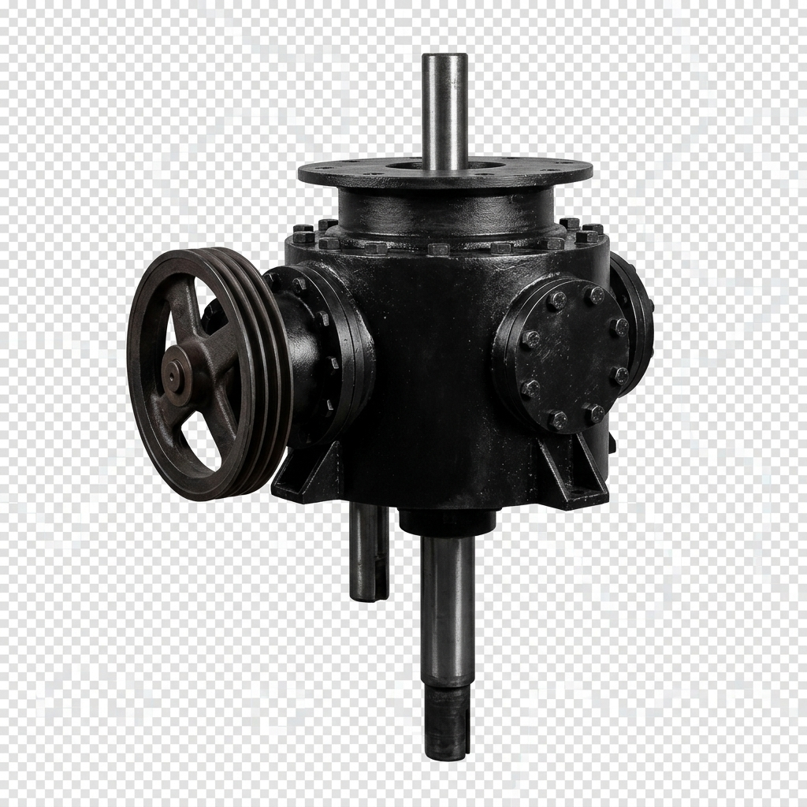
Of Trusted Boring Excellence
Pal Borewells, led by {{OWNER_NAME}}, is the leading water tubewell contractor in Purba Medinipur, West Bengal. We specialize in tapping high-yield underground aquifers for residential, agricultural, and commercial communities.
Pure and clean drinking water tubewells for households and complexes.
High-volume irrigation water setups for farming and crops.
Precision drilling based on local geology and aquifer depths.
Scientific site survey to locate active water tables prior to drilling.
We deliver high-durability boring and installation services tailored to household and farming needs.
Suitable for houses, apartments, villages, and residential buildings. Ensuring pure, sand-free drinking water.
Tubewell boring for farming, irrigation, crop fields, and agricultural lands to ensure high flow water supply.
Long-lasting deep boring for a reliable, chemical-free water supply, reaching depths of 300+ feet into stable aquifers.
Affordable water solutions where shallow water tables are active, perfect for small yards and gardens.
Inspection, servicing, flushing sand blocks, and machinery repairs to keep your tubewell functioning year-round.
Help customers choose the right boring depth, casing pipe, screen thickness, and water pump systems.
Get instant estimates for domestic, agricultural, and commercial tubewell boring across Purba Medinipur.
Ideal for household drinking water, residential homes, 3" & 4" PVC casing pipe setups.
High-yield tubewells for crop fields, paddy farming, 6" & 8" heavy PVC casing pipes.
Deep aquifer drilling for factories, poultry farms, schools, complexes, & plants.
Reverse mud rotary calyx core drilling for hard clay, gravel, & deep rock strata (up to 1,000 ft).
Adjust the depth slider and select a well type to estimate your boring costs instantly.
*Estimation excludes pipes, filters, and submersible pump installation costs. Subject to physical soil surveys.
We deploy robust, high-performance calyx core machinery and transmission rigs to ensure stable, sand-free boring at any depth.
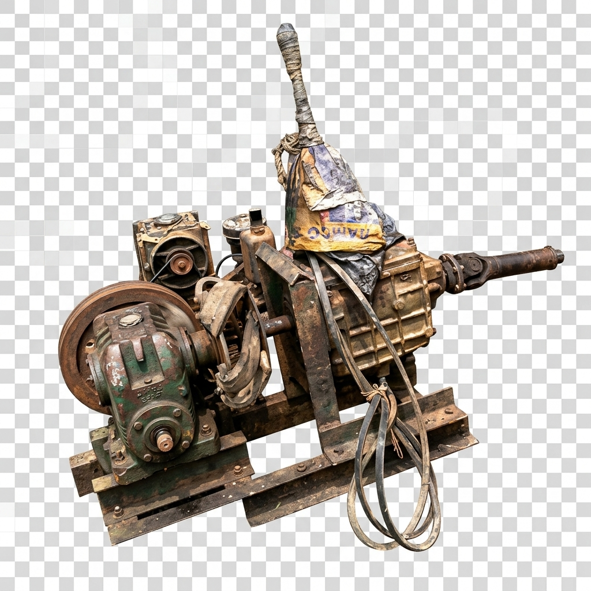
Our core power source is a high-torque agricultural diesel engine designed for raw power and reliability in remote site conditions.
The calyx rotary rig winch mechanism drives the drill bits deep into the ground, stabilizing the drilling assembly.
We combine field experience with modern mechanical equipment to offer the best results.
Equipped with high-performance calyx core rigs and air compressors for faster drilling.
Our onsite drilling crew has over a decade of hands-on geological expertise in Purba Medinipur.
Transparent cost estimates. No hidden charges or unexpected fee hikes mid-operation.
We respect your time. Most standard residential tubewells are completed within 1–2 days.
From initial survey to installation, we provide complete, step-by-step guidance.
We use heavy-gauge PVC casing pipes, durable brass screens, and high-efficiency pumps.
Over 500+ residential and agricultural tubewells successfully boring water across the district.
Fast mobilization and logistical dispatch across all towns of Purba Medinipur.
Five simple steps from your first query to running water.
Discuss your domestic or farming water needs via phone or WhatsApp.
Our technicians survey the land to identify the ideal boring coordinates.
Receive a clear cost break-down based on the depth and pipe selections.
Our mechanical boring crew initiates drilling, pipe casing, and sand screening.
The well is flushed clean, and pure drinking water begins to flow.
A collection of our actual borewell machines, ongoing work, and completed wells.
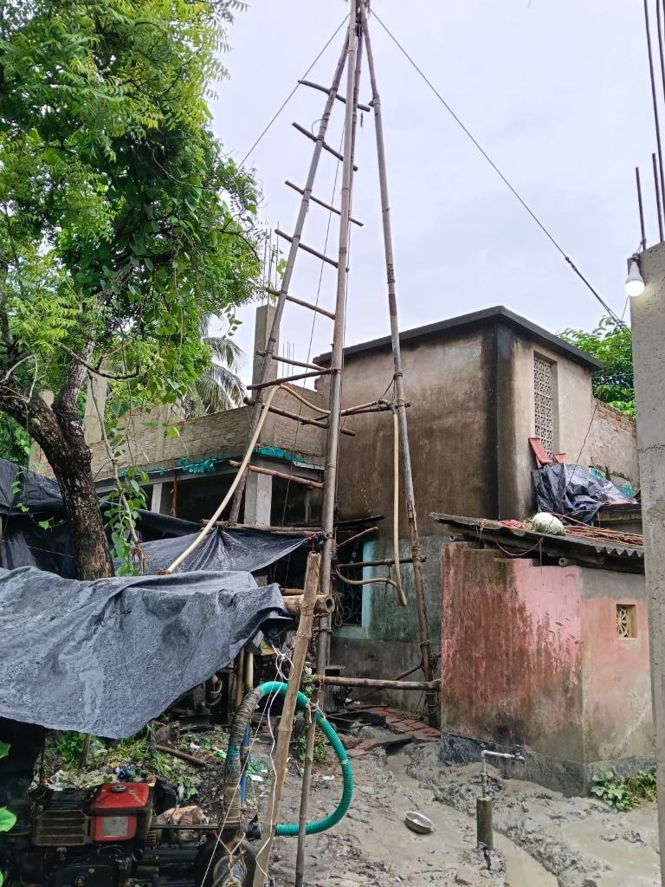
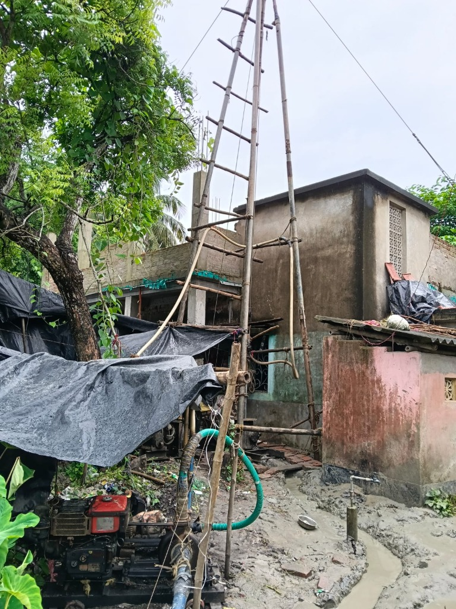
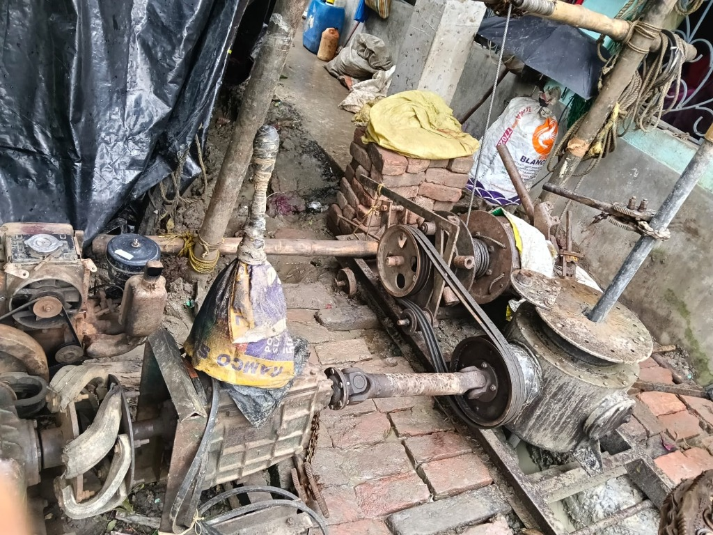
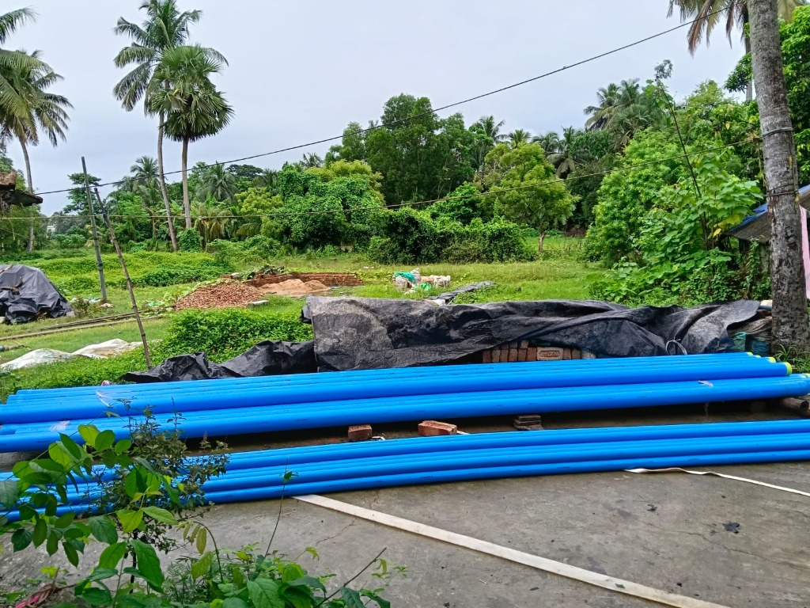
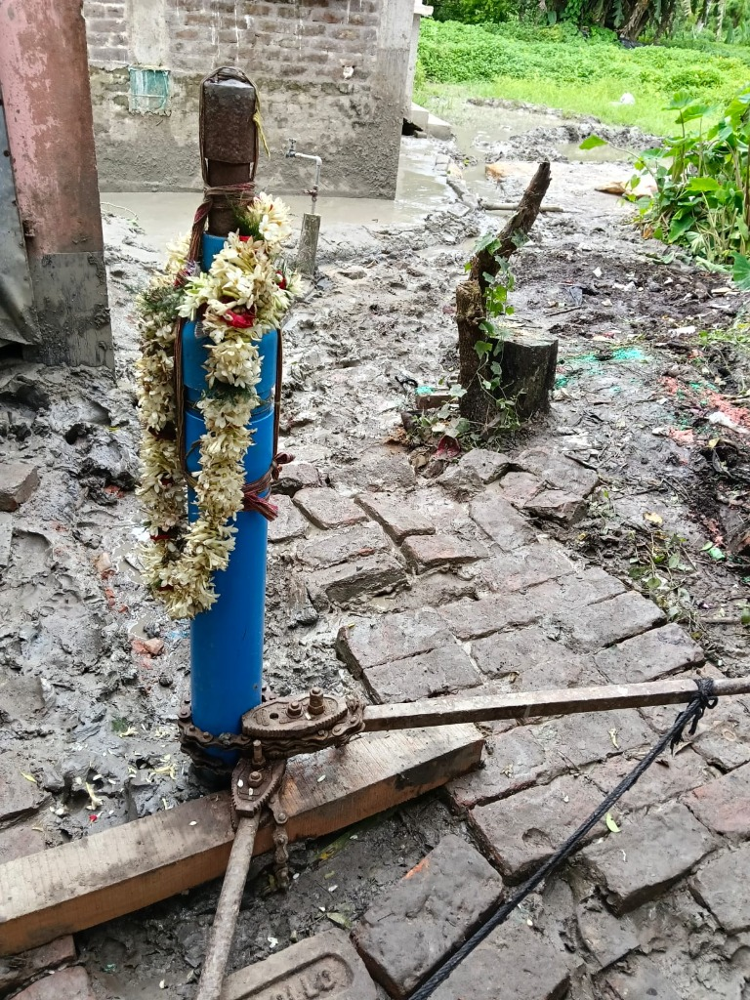
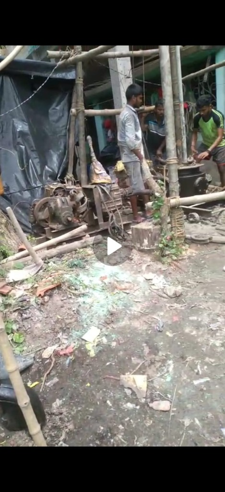
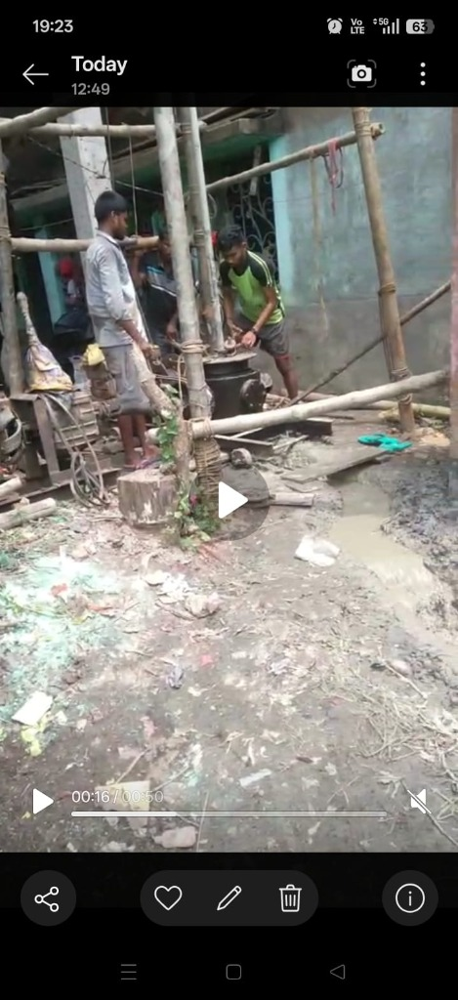
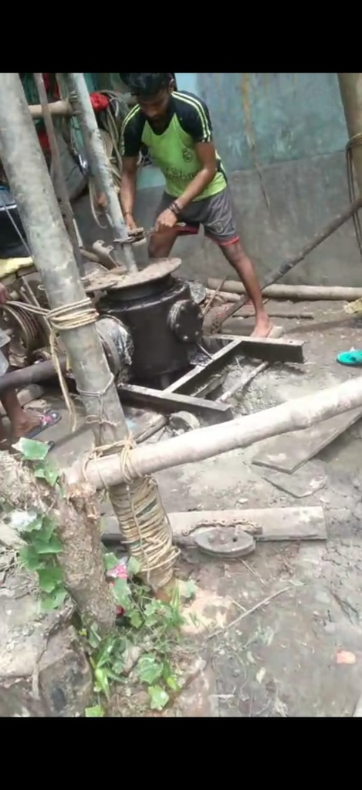
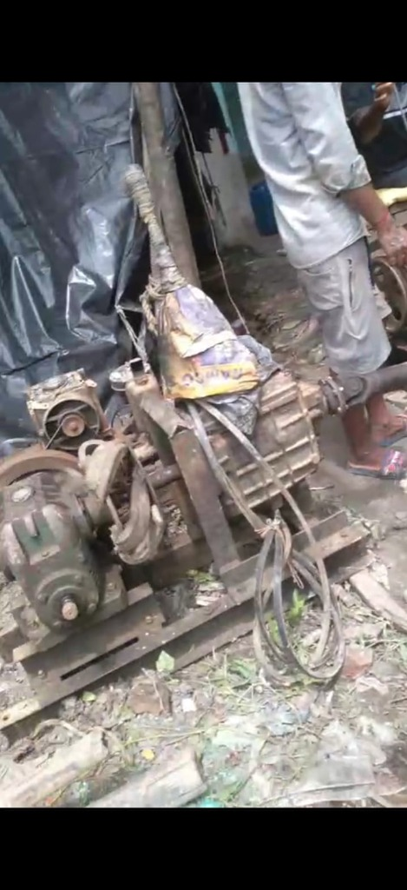
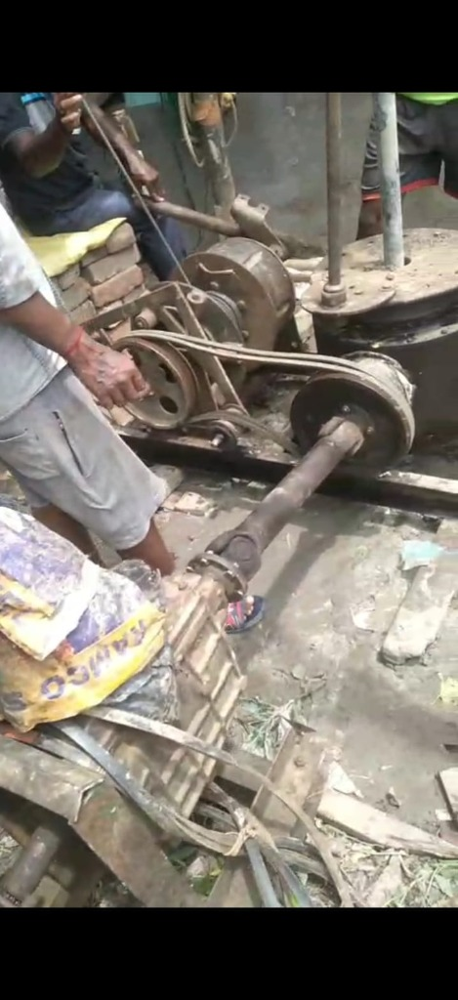
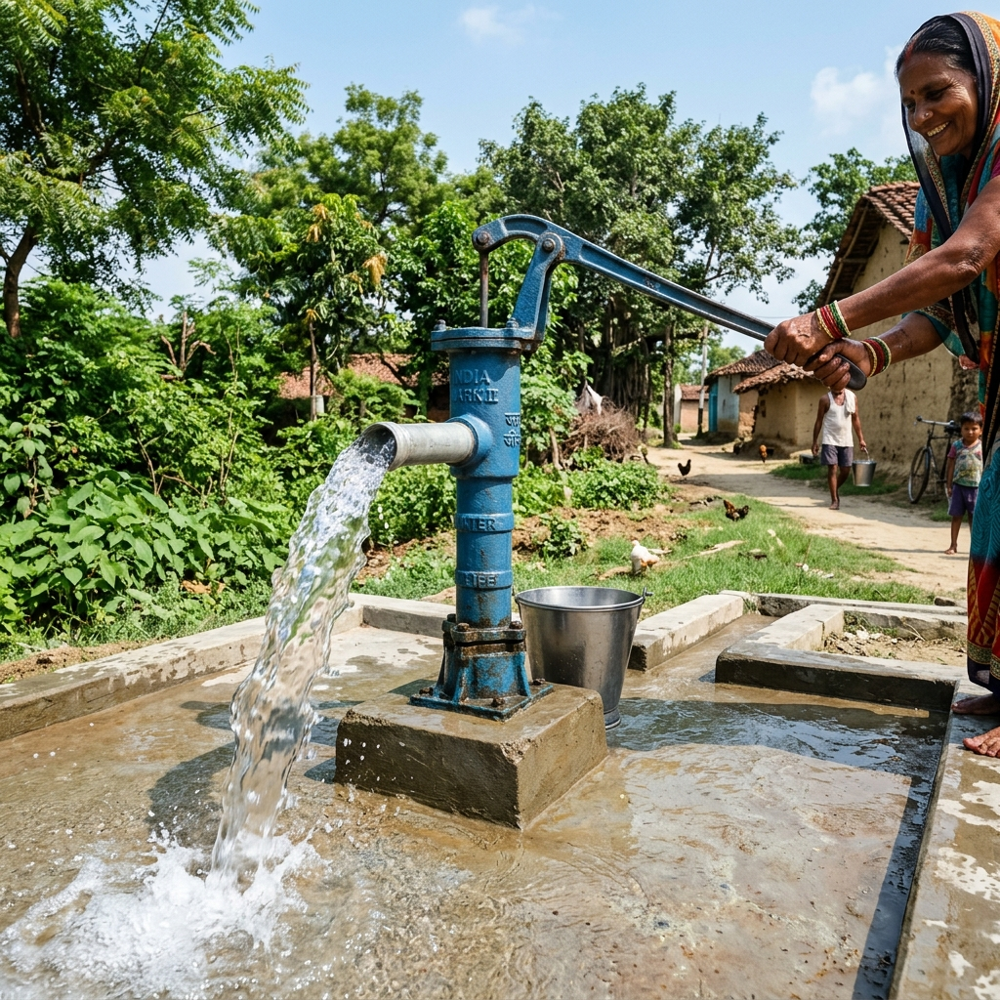
Essential guide to aquifers, casing technologies, and the drilling process to help you make informed decisions.
Before drilling, we conduct resistivity studies to map underground aquifers. In Purba Medinipur, viable fresh water layers are typically located in the deep sands at 150 ft to 300+ ft depths, beneath protective clay layers.
We utilize the reverse rotary calyx drilling technique. Rotary drill heads cut through layers of soil and clay, using water mud circulation to stabilize the borehole walls and flush out core cuttings efficiently.
To prevent borehole collapse and sand infiltration, high-tensile PVC casing pipes are lowered. Heavy-gauge PVC (Class 5/10 kg/cm²) resists lateral ground pressure and guarantees well stability for decades.
A precision-slotted screen filter wrapped in brass mesh is positioned at the water-bearing sand stratum. This lets clean water flow into the pipe while trapping sand particles out, ensuring clean sand-free water.
After casing, the well is flushed using high-pressure air compressors to clean mud cake, sand fragments, and clay deposits. Flushing continues until the water is crystal clear and sand-free.
Depending on the static water level and required flow rate (domestic vs. irrigation), we calculate the pump horsepower (HP). Submersible pumps are set below the draw-down level for continuous water supply.
We provide tubewell boring services in all areas of Purba Medinipur district. We mobilize our machinery quickly to your doorstep, whether you are in a town or a village.
Real stories of satisfaction from residential owners and agricultural farmers.
"Pal Borewells completed our domestic tubewell in Egra within 24 hours. The water is clean and sand-free. Highly recommended!"
"We hired Buddhadeb Pal's team for boring in our crop fields near Contai. Excellent flow rates, perfect pipe fittings, and very affordable price."
"The calyx core drilling and casing setup was handled very professionally. Their workers are highly skilled and efficient."
"We needed a deep tubewell (280 ft) for our apartment building in Haldia. They guided us on local water tables and completed the job on budget."
"Excellent cleaning and flushing service. Our old clogged borewell is now working like brand new with high water output."
"Very reliable. They arrived in Ramnagar on time, surveyed the land scientifically, and completed the tubewell drilling quickly."
Clear answers to help you understand tubewell boring parameters.
The total cost depends on the required drilling depth, type of casing pipe (heavy PVC or GI), aquifer layer structure, and local geological conditions. Contact us for a detailed, customized quote.
Usually, a standard residential tubewell is completed in 1 to 2 days. Deeper commercial or industrial borewells might take 3 to 4 days depending on soil layers and depth requirements.
Yes, we specialize in high-capacity agricultural tubewells for irrigation, crop fields, fish ponds, and farmlands. We deploy diesel-driven high-pressure mechanical rigs to ensure optimal flow.
Yes, we provide tubewell boring services across all villages, agricultural blocks, and urban wards in the Purba Medinipur district.
Yes! We conduct pre-drilling land surveys and scientific resistivity consultations to locate the most water-bearing zones, minimizing dry borehole risks.
Contact us today for fast and reliable boring service anywhere in Purba Medinipur district.
Have questions about depths, pricing, or schedules? Get in touch directly with our business owner.
{{ADDRESS}}
Operational dispatch center serving Tamluk, Contai, Haldia, Egra, and surrounding blocks.
View Routing on Google MapsSelect application type & enter depth up to 1,000 ft